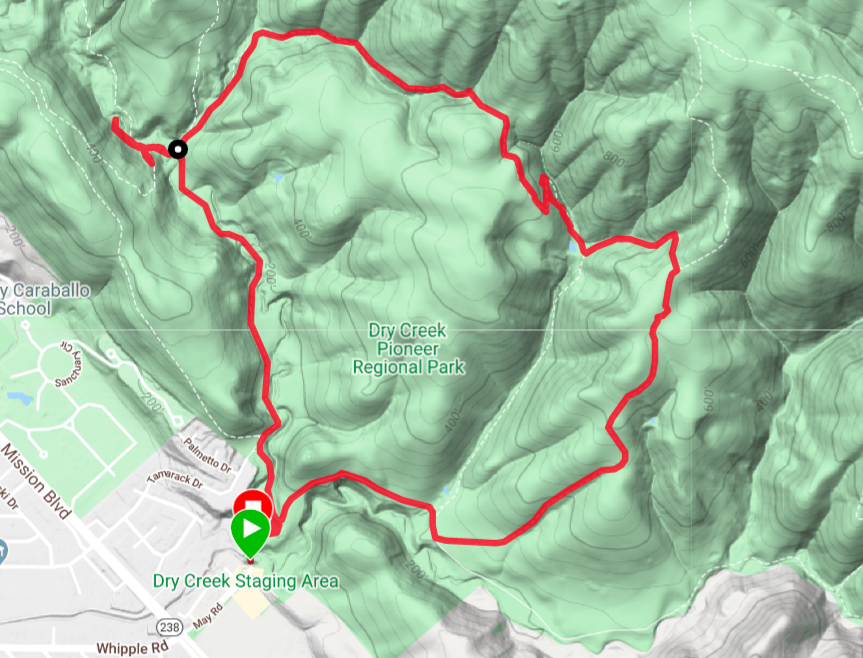
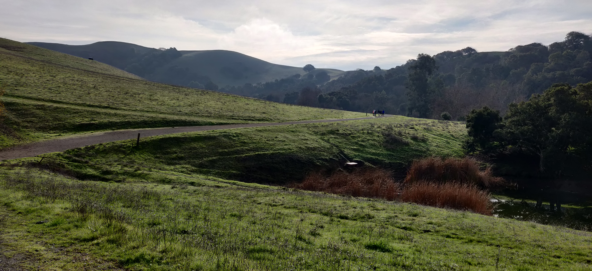
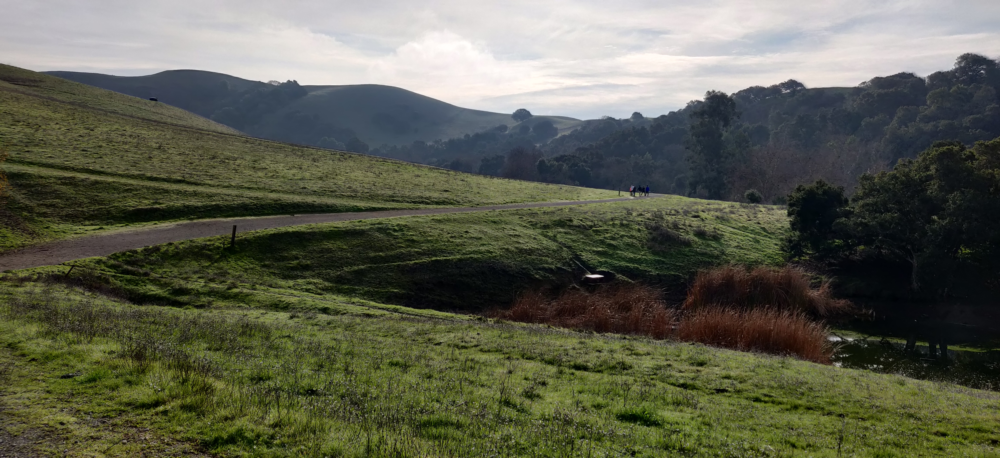
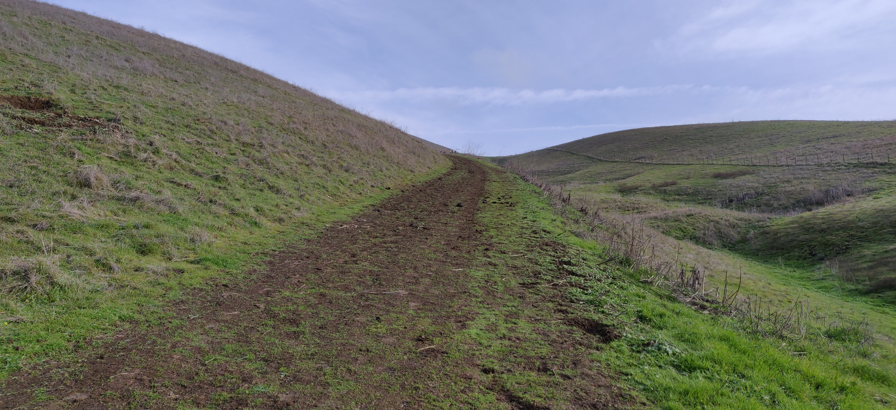
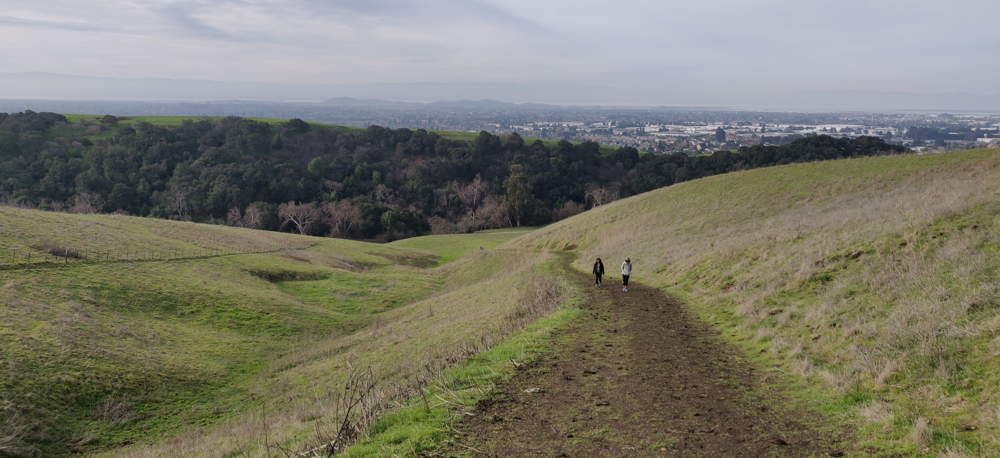
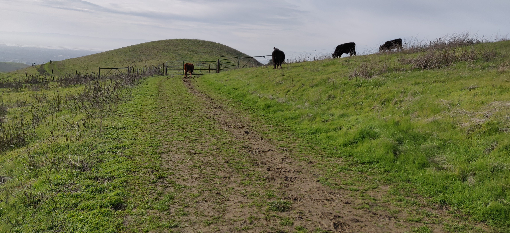

Drycreek Pioneer regional park is one of the East Bay parks located in Union city. For more information about the park visit their website. It was a bit tricky to find the parking lot as there is no designated visitor center for this park. You should search for ‘Dry creek staging area’ in the Google maps. Even the trails are not well marked. We got lost quite a bit and took multiple trails to finish the hike. But overall it was a nice mix of open area, steep climb and shaded regions to hike. It has light traffic but we did see many people hiking. It also gets confusing because the Dry creek regional park continues into Garin regional park without any demarcation. The ‘Park Headquarters’ signs were misleading at a few places since it was leading to Garin regional park but not Dry creek regional park, where we started our hike. So, we need to be careful while navigating within the park. I wish they had clearer sign boards.
- Where is it Do not search for the trailhead as you will be taken to another place where there is no parking. You need to search for ‘Dry creek staging area’.
- Best Time of the year to Visit: During Spring after the showers when meadows have turned green
- Best Time of the day to visit: The park opens at 8am. ![Entrance]
- Parking: There are not many spots. There may be aroubd 20 spots in the staging area
- Trail details:
- Trail name: High ridge loop trail + Pioneer trail + Meyers Ranch trail 
- Strenuous level: Easy
- Total round trip: 3.5 miles
- Things to keep in mind:
- Restroom: There is just one small portable toilet at the staging area
- Carry enough water to keep yourself hydrated
More details on the hikes in the park can be found in this map
The view from the top is of the Bay Area cities below the hill.
Waypoints:
-
The hike begins from the staging area although it’s not the trail head for High ridge loop trail. We pass the Dry creek apartments and take a right turn at the gate to the park
 
 -
Start climbing up the High Ridge loop trail although there is no board. You need to bear left and climb up the hill. It is a rugged path. 
-
After about a mile you will reach the summit with views of the bustling city 
-
At the top, you see a gate which may be blocked by cattle. Although they seemed to be observant and threatening at times, we could walk pass them. They don’t do anything. 
-
The high ridge trail becomes Pioneer trail and is almost a flat region to hike. It goes within a forest with shade for almost a mile. Keep following signs for Pioneer trail.

-
Then we followed Meyer’s Ranch trail so as to get back to the parking lot without having to cross the Dry Creek regional park into Garin Regional Park.

Overall it was not a strenuous hike but it had elevation for the initial part of the hike making it a good workout. I would recommend this if you need a short hike with good views.